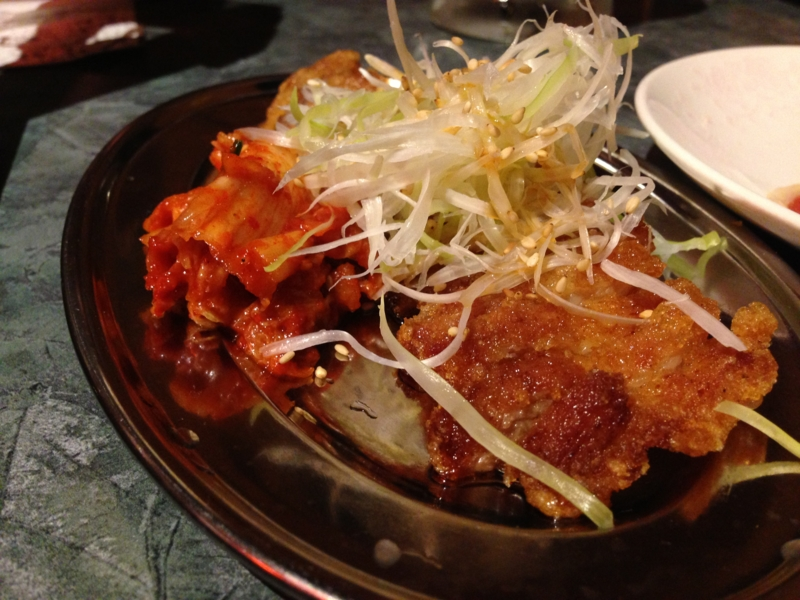

万世の地下に潜入してきたった
公開日：
木曜日の晩だったかな？ @shibayan と“肉の万世”のビル（通称“肉ビル”）の地下にある居酒屋『呉越同舟』に行ってきた。最上階は行かないのかって？ そんなカネはない*1。
おっちゃんが目の前でローストビーフを切ってくれるぜー！

お姉さん（顔出し不許可）も目の前で生ハムを切ってくれるぜー！
なんということもないのだけど、こういう演出があるだけでちょっと楽しくなる。

結構食べまくったけど、二人で10,000円ちょっとだったので、それほど高くはない。というか、変なところでハズレ引くことを考えれば、なかなかよいチョイス。お肉美味しいし、また行きたい。

ちなみに、1F で提供されるパーコーメン（排骨拉麵）の“排骨”をツマミとして頼むこともできる。排骨拉麵はまだ食べたことがないので行ってみたい。
*1:肉ビルでは階が上になればなるほど、お値段が高くなるという。今のところ 5F の焼き肉店『万世牧場』までしか行ったことがない